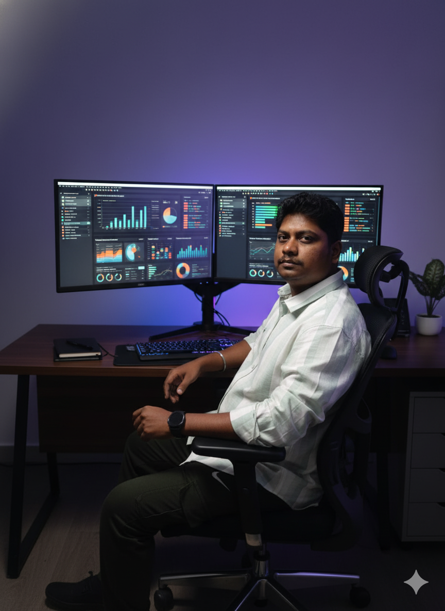

Data Analyst transitioning from 2.7 years of UI Development. I turn messy datasets into clean insights — using SQL, Python, Power BI, and Excel.

I spent 2.7 years as a UI Developer at InfinityHub, building data-heavy dashboards and working closely with structured data. Over time I realized the part I enjoyed most wasn't the UI — it was the data behind it.
That led me to a deliberate career switch into Data Analytics. I enrolled in the Entri Elevate AI-Driven Data Analytics program and systematically built skills in SQL, Python (Pandas, Seaborn, Plotly), Power BI, and Excel.
I've also completed the Deloitte Forage internship (Tableau + Excel tasks) and a HackerEarth summative assessment covering all four tools. I'm currently targeting Data Analyst roles in Bangalore, Chennai, and Coimbatore.
Built through real projects, not just courses.
End-to-end projects — from raw data to insight.
Cleaned and analyzed 10,921 records down to 3,294 usable rows. Discovered LA County holds 72.1% of facilities, and 96.7% operate with zero licensed beds — reframing how facility density is measured. Built trend predictions for 2026–2027 using numpy polyfit.
Built an end-to-end interactive dashboard on a 1,220-row messy dataset. Cleaned via Power Query, modeled as star schema, and wrote 9 DAX measures including MoM growth and % of total. Delivered 6 KPI cards, 6 chart types, and 3 dynamic slicers.
Built an Excel dashboard analyzing healthcare AI patient data. Used Pivot Tables, Power Query for data cleaning, and slicers for interactive filtering. Surfaced key trends in patient insights and service patterns.
Power BI dashboard analyzing AI job market trends from 2025 to 2030. Applied DAX measures for YoY growth, built star schema model, and visualized demand shifts across roles, regions, and skill sets.
Client projects built and deployed — before the analytics pivot.
First freelance project: full website for a Tamil Nadu legal firm. Started from a basic layout, iterated through client feedback rounds, ensured mobile responsiveness, customized Bootstrap modals, and deployed live on Hostinger. Jan 2026.
Programs and assessments that validated the transition.
Forage · 2026 — Tableau Dashboard + Excel Data Analysis
Entri Elevate · 2025–2026 — SQL, Python, Power BI, Excel
April 2026 — SQL · Python · Excel · Power BI
InfinityHub · HTML, CSS, JavaScript, React — Production projects